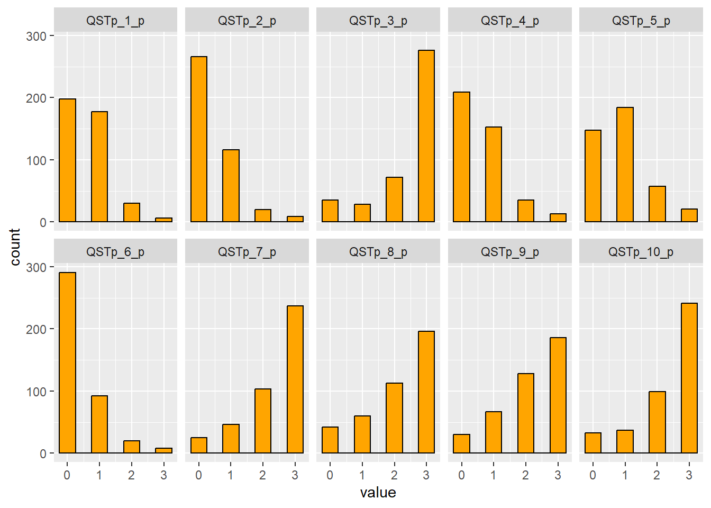
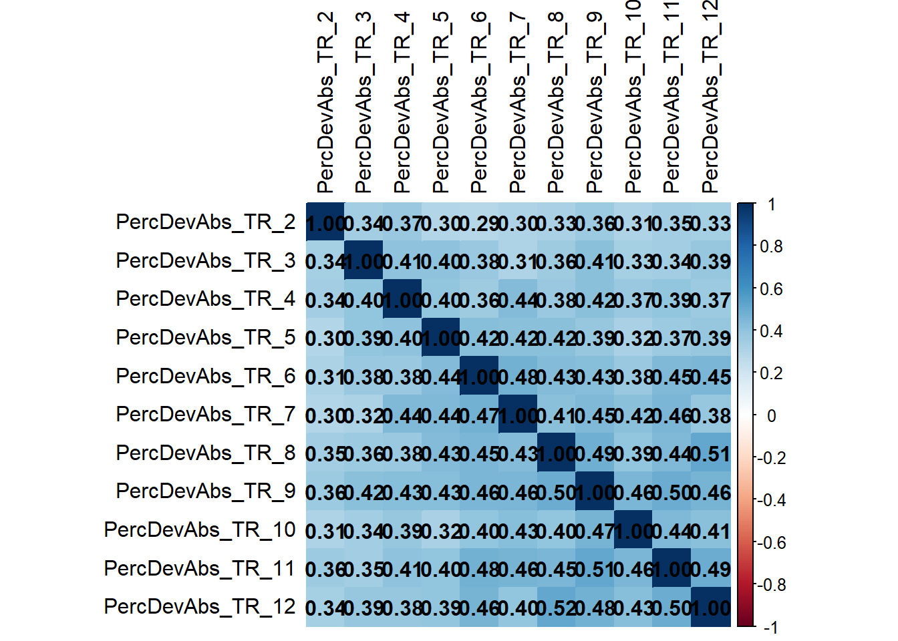
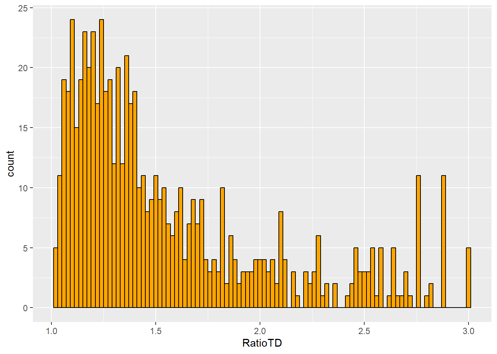
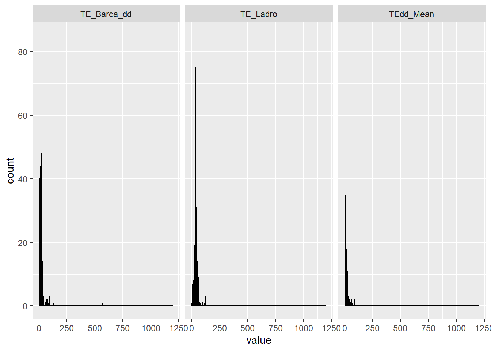

Parents responded to 10 items regarding their children sense of time. The items were on a 4-point Likert scale (0-3) and, as clear from Figure 1, the response distribution was extremely skewed with parents almost never reporting extremely high negative values.
var ="QSTpadua_parent"items = dd$Var_name[dd$Level=="item"&dd$ScaleName==var]itemsQstParent = items[!is.na(items)]df_melted <-melt(df, id.vars =c("Grade", "Gender", "Code", "Age"),measure.vars = itemsQstParent)ggplot(df_melted, aes(x = value)) +geom_histogram(binwidth = .5, fill ="orange", color ="black") +facet_wrap(~variable, ncol =5)
Warning: Removed 2893 rows containing non-finite outside the scale range
(`stat_bin()`).

Figure 1
Given the properties of the Likert distribution, we thus fit a single-factor CFA using DWLS estimation for ordinal data.
The model, however, does not have a great fit. Inspecting modification indices, it clearly appears that positive items (see also the distributions of items 1,2,4,5,6) are more similar than it should be.
I added two covariances, but this does not help much. Modeling covariance across all the positive items gives a perfect fit, but loadings of positive items almost disappear.
An alternative solution might be fitting a two-factor model. This has optimal fit indices, however, the correlation between the two LV is very low (.14). Fitting a hierarchical model raises convergence issues.
As for the parent questionnaire, teachers responded to 10 items on a 4-point Likert scale. In this case, however, we only have positively-keyed items and, with the exception of items 1, 6, and 10 (Figure 2), most answers receive the highest score.
For time reproduction, children perceived 12 time sequences and reproduced them. The scores are calculated as the absolute value of the ratio between reproduced and correct time.
This, however, generate an extremely skewed distribution of the scores (see Figure 3). Hence, we transformed the items before analysis.
And well correlated (both when normalized [above the diagonal] and raw [below], see Figure 5):
corTabTrNorm <-cor(df[,itemsNorm],use="pairwise.complete",method="pearson")corTabTrRaw <-cor(df[,items],use="pairwise.complete",method="spearman")corTabTr <- corTabTrRaw # start with raw (lower triangle)corTabTr[upper.tri(corTabTr)] <- corTabTrNorm[upper.tri(corTabTrNorm)]corrplot(corTabTr,method ="color", type ="full", addCoef.col ="black", tl.col ="black")

Figure 5
Time knowledge and orientation
The time orientation questionnaire is composed of 16 questions about time knowledge and orientation. The first 10 items measure time knowledge, while the last 6 measure time orientation. Items are scored as 1 if correct or 0 if wrong (Figure 6).
# Time Orientation #### var ="OTm"items = dd$Var_name[dd$Level=="item"&dd$ScaleName==var]itemsTimeOt = items[!is.na(items)]df_melted <-melt(df, id.vars =c("Grade", "Gender", "Code", "Age"),measure.vars = itemsTimeOt)ggplot(df_melted, aes(x = value)) +geom_histogram(binwidth = .5, fill ="orange", color ="black") +facet_wrap(~variable, ncol =8)
Warning: Removed 3036 rows containing non-finite outside the scale range
(`stat_bin()`).
The two tests measuring time discrimination and estimation cannot be modeled using factor analyses as they are either composed by two items (time estimation) or return a single score based on the lowest discrimination ratio calculated with adaptive processes.
Time discrimination
For time discrimination, the distribution of the scores is again very skewed (see Figure 7), with most children scoring between 1 and 1.5.
# dd$Var_name[dd$Construct == "Time Discrimination"]ggplot(df, aes(x = RatioTD)) +geom_histogram(binwidth = .02, fill ="orange", color ="black")
Warning: Removed 37 rows containing non-finite outside the scale range
(`stat_bin()`).

Figure 7
Time estimation
For time estimation, the score is given by the absolute difference (in seconds) from the correct answer. The distribution of the scores is again very skewed (see Figure 8).
# Time Estimation ##### dd$Var_name[dd$Construct == "Time Estimation"]teItems <-c("TE_Barca_dd","TE_Ladro","TEdd_Mean")df_melted <-melt(df, id.vars =c("Grade", "Gender", "Code", "Age"),measure.vars = teItems)ggplot(df_melted, aes(x = value)) +geom_histogram(binwidth = .5, fill ="orange", color ="black") +facet_wrap(~variable)
Warning: Removed 15 rows containing non-finite outside the scale range
(`stat_bin()`).

Figure 8
The correlations between the two items is very high, suggesting that common factors explained children performance in both items.
cor(df$TE_Barca_dd,df$TE_Ladro_dd, use ="complete.obs")
[1] 0.8745777
Convergence of the scales
Correlations
With the exception of the time estimation score, the time scales are all correlated between each other and with participants’ grade, but not with gender (Figure 9).
The model shows acceptable, yet quite low, fit indices. MI suggest that time discrimination and time reproduction scores may be more similar between each other than with other factors. This makes sense as the two have quite similar requests. With this specification, the model shows excellent fit to the data.
Across primary schools, we expect the time scores to increase, possibly linearly, but probably not. Figure 13 shows the grade trend of the six scales, while Figure 14 shows the continuous age trend: